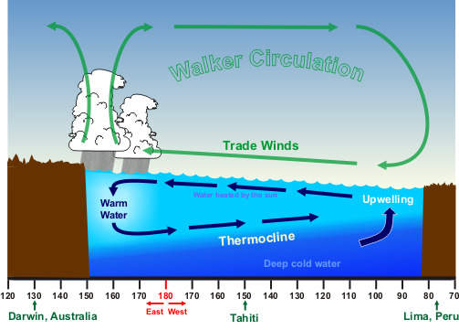
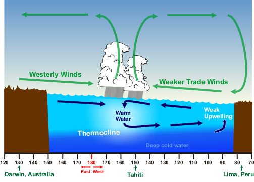
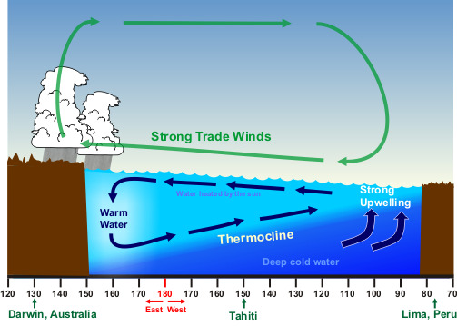

Effects of ENSO in the Pacific
Normal Conditions

Normally, sea surface temperature is about 14°F higher in the Western Pacific than the waters off South America.
This is due to the trade winds blowing from east to west along the equator allowing the upwelling of cold, nutrient rich water from deeper levels off the northwest coast of South America.
Also, these same trade winds push water west which piles higher in the Western Pacific. The average sea-level height is about 1½ feet higher at Indonesia than at Peru.
The trade winds, in piling up water in the Western Pacific, make a deep 450 feet (150 meter) warm layer in the west that pushes the thermocline down there, while it rises in the east.
The shallow 90 feet (30 meter) eastern thermocline allows the winds to pull up water from below, water that is generally much richer in nutrients than the surface layer.
El Niño Conditions

However, when the air pressure patterns in the South Pacific reverse direction (the air pressure at Darwin, Australia is higher than at Tahiti), the trade winds decrease in strength (and can reverse direction).
The result is the normal flow of water away from South America decreases and ocean water piles up off South America. This pushes the thermocline deeper and a decrease in the upwelling.
With a deeper thermocline and decreased westward transport of water, the sea surface temperature increases to greater than normal in the Eastern Pacific. This is the warm phase of ENSO, called El Niño.
The net result is a shift of the prevailing rain pattern from the normal Western Pacific to the Central Pacific. The effect is the rainfall is more common in the Central Pacific while the Western Pacific becomes relatively dry.
La Niña Conditions

There are occasions when the trade winds that blow west across the tropical Pacific are stronger than normal leading to increased upwelling off South America and hence the lower than normal sea surface temperatures.
The prevailing rain pattern also shifts farther west than normal. These winds pile up warm surface water in the West Pacific. This is the cool phase of ENSO called La Niña.
What is surprising is these changes in sea surface temperatures are not large, plus or minus 6°F (3°C) and generally much less.